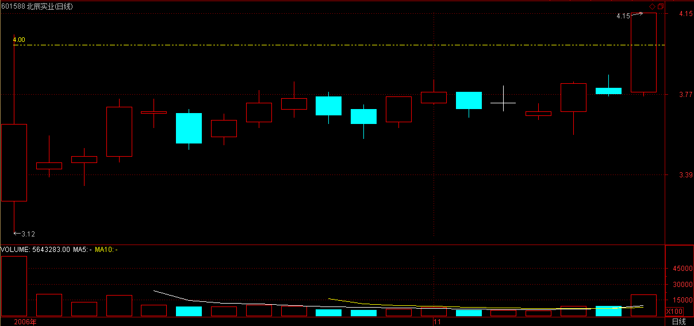

(2006-11-16 12:00:01)
教你炒股票7：给赚了指数亏了钱的一些忠告
【韶山映山红】原文配图600019宝钢股份日K线图。新浪博客自动更新为当下的新图，这里贴上当时的日K线图。】
【韶山映山红】静姐07-00】
今天不宠幸孔二爷了，宠幸一下股票。
早就说过，中国没有人有资格和本ID谈论股票。国庆前，香港有几个大的基金经理过来，吃饭时让本ID给修理了一通，屁颠屁颠回去了。
本ID和他们说了大的国际经济趋势以及大中国区的金融前景还有内地的政治经济形势，坚定他们的信心，他们主要是对内地的情况不了解，所以有所狐疑。【韶山映山红】“大的国际经济趋势”，“大中国区的金融前景”，“内地的政治经济形势”。】
最近这伙人干得不错，在市场里，干就往死里干，不干白不干。把锅炒热了才有好菜吃，这道理不很简单？
【韶山映山红】静姐07-01】
但这几个月还是有点烦，就是整天给一大叔骚扰。他钱不多，也就千万级别的资金规模，这种人本ID从不搭理，【韶山映山红】千万级别的资金规模，在缠师眼里，钱不多，从不搭理。】但这大叔有点特殊，有些渊源，人家年纪又这么大，40好几了，怎么都给点面子。【韶山映山红】年纪这么大的四十好几，大约是55后至65前这段。】
但有时候，真想踹他两脚。4月份，本ID布局权证时，他就不敢买，后来权证疯了，他就后悔。【韶山映山红】《教你炒股票06：本ID如何在五粮液、包钢权证上提款的！》“就像四月份时本ID在五粮液、包钢认购权证上的布局。” 】
【韶山映山红】030002五粮YGC1认购权证2006年4月开始到2006-11-16写这篇文章之间的日K线图。】
【韶山映山红】580002包钢JTB1认购权证2006年4月开始到2006-11-16写这篇文章之间的日K线图。】
然后告诉他，年纪大了就不要玩太高风险的，买银行股吧，民生，4块钱附近买了就搁着，结果赚了几毛钱就跑，真没出息。
【韶山映山红】600016民生银行。从缠师推荐开始到2006-11-16写这篇文章之间的表现。】
【韶山映山红】600016民生银行。从缠师推荐开始，到2007-10-16的6124点期间的表现。】
最可气的是，国航跌破发行价时告诉他去买，【韶山映山红】601111中国国航。2006-08-18上市，发行价2.80元。上市就跌破发行价，首日换手22.12%，成交总额7.96亿。】
他自己也当过兵，特别提醒他国航的李总当兵出身的，怎么可能让自己的股票跌破发行价这么没面子？【韶山映山红】“国航的李总”李家祥。2000年11月去国航以前，任沈阳军区空军副政委，少将军衔。】
这大叔犹犹豫豫，N天时间也就买了点，【韶山映山红】上市破发，直到10个交易日过后，9月4日才涨过发行价。期间换手39.69%。应该还是破发的顾虑让这大叔犹犹豫豫。】
长起来几毛钱又走了。【韶山映山红】可能是在这个阶段的震荡中走了。】
【韶山映山红】601111中国国航。从缠师推荐开始到2006-11-16写这篇文章之间的表现。】
【韶山映山红】601111中国国航。从上市到2007-10-16的6124点期间的表现。】
最近，让他在3元多吸纳北辰实业，
【韶山映山红】601588北辰实业。2006-10-16上市。发行价2.40元。首日换手75.24%，成交总额19.1亿元。】
4块不到就跑了，【韶山映山红】上市以后有18个交易日维持在4元以下。然后向上突破。】

本ID简直对他彻底绝望。【韶山映山红】601588北辰实业从缠师推荐开始到2006-11-16写这篇文章之间的表现。】
【韶山映山红】601588北辰实业的第一波。】
【韶山映山红】601588北辰实业从上市到2007-10-16的6124点期间的表现。】
不过他还算好，有部分钱在年初3、4块买了一只自己十分熟悉的北京股票，
【韶山映山红】600195中牧股份。“3、4块”是2006年3月28日10送3.5之后价格。】
现在已经10块了，【韶山映山红】600195中牧股份。从“年初3、4块”开始到2006-11-16写这篇文章之间的表现。缠师推荐的股票动不动就跑掉，“自己十分熟悉的北京股票”拿了半年、也经历了200%大涨，可见信心是自己给自己的，熟悉、了解是关键。】
【韶山映山红】600195中牧股份。从“年初3、4块”开始到2007-10-16的6124点期间的表现。】
但这大叔最麻烦的是，上下一波动就紧张，就打电话来骚扰本ID，本ID教他怎么在箱型盘整时弄短差，这大叔，涨的时候不敢卖，跌的时候不敢买，本ID真服了他。【韶山映山红】打短差的思想贯穿整个缠论的发展过程。早期粗浅地解说，就是“箱型盘整时弄短差”，正式的缠论是部分仓位参与操作级别的次级别操作来打短差。】
之所以说这，因为这种情况在散户中太常见。散户就如浮萍，没根，没主意，这样不给屠杀才怪了。【韶山映山红】没有自己掌握技术能力就“没根”，“涨的时候不敢卖，跌的时候不敢买，”“上下一波动就紧张”，只能“如浮萍”那样的随波逐流任人摆布，只能像韭菜一样被收割了一茬又一茬。解决之道只有毛主席教导我们说的：独立自主、自力更生，艰苦奋斗、勤俭建国！】
大概最近比这大叔更惨的，赚了指数亏了钱的也不在少数，本ID也废话一下，让有缘者得之。
【韶山映山红】当日上证指数日Ｋ线图。大盘指数从998大底起步涨了将近100%。】
去年破1000点前，本ID曾写“G股是G点”，【韶山映山红】这里说的“破1000点”是跌破。】
今天5月刚突破后，本ID又写“大牛不用套！”，【韶山映山红】5月快速向上拉，突破前期下跌的两个中枢区间。】
但为什么有人竟然可以不挣钱？最主要是对牛市没信心，对牛市的节奏没把握。【韶山映山红】“没信心”的根源还是没能力。这个“牛市的节奏”就是下面说的先涨有色的预热阶段，再换金融股等为代表的指数股上涨的第一阶段。】
5月份前有色等的上涨，不过是牛市的预热阶段，【韶山映山红】有色是牛市的预热阶段。当时的000819上海有色金属指数，涨了300%多。】
而目前以金融股等为代表的指数股上涨，是牛市的第一阶段。【韶山映山红】金融股等为代表的指数股上涨是牛市的第一阶段。当时的399240深圳金融指数。】
96年的时候，【韶山映山红】1996年全年的上证指数日K线。】
深发展长了N倍了，很多股票还没怎么动。【韶山映山红】000001深发展A，2012.08.02变成平安银行。1996年全年的000001深发展A日K线（前复权）。】
牛市的第一阶段都是这样的，一线股先长，它们不到位，其他股票怎么长？【韶山映山红】这里是缠师第一次说“一线股”。什么是“一线股”？怎么对待？可以做个专题，以后研究。★】
全世界的牛市都基本这样子，没什么新鲜的。【韶山映山红】是规律，就有广泛的适用性。】
【韶山映山红】缠师关于“一线股”的语录。】
“牛市的第一阶段都是这样的，一线股先长，它们不到位，其他股票怎么长？”
你是按什么标准把股票划分为一、二、三线的？“这没有什么太明确的标准，都是约定俗成的。像发展是一线股，深房是三线股，这是历史形成的。当然业绩也有一定作用，太不是唯一的因数。”
“牛市炒股票基本没有什么技术含量，就是板块轮动。 例如现在的牛市第一阶段炒成分股，先启动一线的，也就是盘子最大的，然后二线、三线，基本就这节奏。一线不会大跌，一旦大盘要冲关之类活动，一线就会出来露脸。一线是反复炒。”
“一线股，权重股，在盘整中用来控盘，在上升中用来突破。这次上涨最大的问题，就是没人关照这些一线股，大家都忙各自的一亩三分地，这也正常，现在是二、三线的天下。”
“从来都是在业绩大面积公布时，所谓业绩好的、一线股表现得好一点。等业绩公布完了，业绩作为题材被炒烂了，自然要找新的来替代，否则就维持不住这锅的热度。”
错过了这个节奏怎么办？【韶山映山红】“这个节奏”就是先涨有色的预热阶段，再换金融股等为代表的指数股上涨的第一阶段。】
如果你跟盘技术还行的，就要在回档的时候跟进强势股票。【韶山映山红】牛市是阶段性的，阶段之间就有调整，就有“回档”，在轮动的时候“跟进强势股票”，踏准下一个阶段的节奏。这里是缠师唯一提到“跟盘技术”的地方。跟盘技术的包括什么？怎样才能“在回档的时候跟进强势股票”？以后研究。★】
散户就怕跌，但牛市里，跌就是爹，一跌就等于爹来了，又要发钱了。【韶山映山红】对大市而言，牛市的跌是调整，是轮动，所以“跌就是爹”。对个股而言，买点永远是在下跌中产生的。】
如果跟盘技术不行，有一种方式是最简单的，就是盯着所有放量突破上市首日最高价的新股【韶山映山红】那个时候的新股上市不像现在这样疯狂，“放量突破上市首日最高价的新股”这个办法基本上没用了。】以及放量突破年线然后缩量回调年线的老股，这都是以后的黑马。特别那些年线走平后向上出现拐点的股票，一定要看好了。【韶山映山红】对于老股，年线向下意味着前面经历了长期的下调，回暖后“放量突破”、“缩量回调”、特别是“年线走平后向上出现拐点”，都是因为下跌趋势基本结束，有资金进场。“年线走平后向上出现拐点”可以直观地量化，什么样的算是“放量突破”？什么样的算是“缩量回调”？这些不属于缠论的分析方法，缠师也只在这里说了。可以做个专题，以后研究。★】。至于还在年线下面的股票，先别看了，等他们上年线再说。其实，这就是在牛市中最简单可靠的找所谓牛股的方法。【韶山映山红】错过节奏，跟盘技术又不行，就不要管什么轮动了，做好自己能力范围之内的事。最简单可靠的方法就是按图索骥找黑马：“放量突破上市首日最高价的新股”，“放量突破年线然后缩量回调年线的老股”，“特别那些年线走平后向上出现拐点的股票”。
举一个例子，去看看宝钢，突破年线后缩量回调，10月23日回调4.20元，当时年线就在4.17元，然后再放量启动，今天，11月16日，已经6元多了，50%就这么完成了。从年线上启动，先长个50%，不像玩一样？【韶山映山红】600019宝钢股份。年线向下，然后走平，查数据可以看到，图上红箭头处“年线走平后向上出现拐点”。】
【韶山映山红】600019宝钢股份。放大看缠师实例说的“放量突破”、“缩量回调”。之前有一次的放量突破，回调的时候跌破了年线。再次突破年线的时候是小步慢涨的，然后放量拉上去使年线出现拐点。这次回调没有跌破年线。】
本ID一般只看大盘股票，小盘股没法进去，但散户可以看小盘股，原则是一样的，不过小盘股可要留意，一般大盘股启动的骗线比较少，小盘股可不一定，这都要自己好好去揣摩。【韶山映山红】“原则是一样的”，小盘股要留意骗线。不同标的的“股性”不一样，“要自己好好去揣摩”。】
散户就当好散户，别整天想着抄底、逃顶，底都让你抄了，顶都让你逃了，不是散户的人吃什么去呀？散户，一定要等趋势明确才介入或退出，这样会少走很多弯路。【韶山映山红】纳什的智猪博弈，等待是小猪的占优策略。散户不一定买在一买，二买、三买更安全。卖要努力争取在一卖。】
【韶山映山红】这里是原文第一个用于走势描述的“趋势”。但不是缠论形态学意义的趋势。】
一只股票长起来千万别随意抛了，中线如果连三十天线都没跌破，证明走势很强，就要拿着。【韶山映山红】后面说的是中线不破周线MA5均线，短线不破日线MA5均线。】
当然，如果你水平高一点，在上涨的时候，根据短线指标可以打短差，这样可以增加资金的利用率，【韶山映山红】后面说的是部分仓位在操作级别的次级别打短差。】
但高位抛掉的，只要中线图形没走坏，回挡时一定要买回来，特别那些没出现加速的股票。【韶山映山红】打短差不能把筹码打没了，回补很关键。】
有一个抛股票的原则，分两种情况，一种是缓慢推升的，一旦出现加速上涨，就要时刻注意出货的机会；另一种是第一波就火暴上涨，调整后第二波的上涨一旦出现背弛或放巨量的，一定要小心，找机会走人。【韶山映山红】这部分讲的是，散户首先要学会持股，水平高一点的可以持股的同时打短差。抛股票的原则：1，“缓慢推升”＋“加速上涨”,2，“第一波就火暴上涨，调整后第二波的上涨一旦出现背弛或放巨量”。】
【韶山映山红】这里是缠师第一次提到背弛，只是提到，没有过多的内容。从内容分析，这个时候还没有走势类型的定义，上涨+调整+上涨，这里的背驰属于盘整背驰。这里也是缠论关于成交量的不多的描述之一。】
具体的操作是一个火候的问题，必须自己用心去体会，就像煲汤，火候的问题是没法教的，只能自己在实践中体会。【韶山映山红】看花容易画花难，“火候的问题是没法教的”，“自己在实践中体会”。】 还有，对抛弃的股票一定不能有感情，股票就像男人，玩过就扔，千万别有感情。【韶山映山红】操作级别的卖点卖，不要参与调整。买卖股票是因为有机会赚钱，而不是因为股票有多么好、多么可爱。】
还有一点必须提醒，在牛市中，一定要严重关注成分股，特别有一定资金规模的，成分股都是大部队在战斗，【韶山映山红】这里是缠师第一次说“成分股”。什么是“成分股”？怎么对待？可以做个专题，以后研究。★】别整天跟那些散兵游勇玩，那些人自己都自身难保，本ID看这种所谓游资被消灭的都看到麻木了，大资金就爱吃他们，几个亿几个亿吃他们，这才有点意思，否则吃小散户的几万几千，累不累呀？【韶山映山红】人选股票，股票也在选人。跟什么样的人在一起，成为什么样的人。】
【韶山映山红】程老湿爱吐槽 3月19日 15:01 来自 微博 weibo.com
看票有三境，看图，看钱，看人
票的图是大家都能看见的，左比划右比划无外乎找个理由说服自己。看图有没有效，是建立在画图的人在意不在意你怎么想。
也就是说，图画好了，大家的心会齐（无声的沟通）。图画坏了，就是让你心动。
这是第一个层次。
第二个层次，看钱。简单说，交易不活跃的地方就没必要看。一帮穷人你卖给我我卖给你，这没撒好看的。
交易活跃，参与的钱多，说明这里油水就大。同样一个涨停，2000w就封板了，撑死了你也就能买个三五百万。第二天还要担心没有人来陪你玩。20个亿的封板，买一个亿也不担心明天跑不掉卖不出，这是水深。
一线柚子总是扎堆在一些热门票里，越是人多越往里扎就是这个道理。做一单比做十单都赚得多，而且还安全，流动性好的多。
钱多可以画图，但画图是为了让更多人来，而不是为了画图而画图。毕竟，交易闭合，卖不出去货的图，就是个艺术家。
第三个层次，看人。简单说，识别出什么人在里面玩，再考虑要不要加入一起。
很简单的道理，如果里面都是聪明人，最好就不要一起玩。你是来赚钱的，不是比拼谁厉害的。如果里面都是一窝散户，这也是很麻烦的，筹码太分散，随时都可能有人有新想法，方向很难一致。如果里面都是不动的，这是最好的。道理简单，边际定价。
所以，刀手多了的票，股价必然上串下跳，很难走出流畅的大波动。人人都想砍人，斗勇斗智最后就是多输格局。
容易做的票，必然是拿大仓的人不愿意折腾就想躺着（上升趋势明确），靠着边际定价来往上走。一来二去，图越来越好看，流动性也越来越好，预期也就越一致，股价也就越涨越快。
当然，谁都有资格买股票，这就决定了“什么人”是个感性认知。也就是：边际定价是谁说了算。这需要持续观察，而不是一天两天就能有结论。
记住：有些人追逐波动他们也就决定波动，有些人追逐方向他们也就决定方向。这才是要识别的。】
牛市中，最终所有股票都会有表现的机会，只是掌握了节奏，资金的利用率就高，【韶山映山红】这里说的提高资金利用率是利用轮动的换股操作。缠论三大系统的技术系统是针对个股操作的，利用轮动要先学好其他系统。】一个牛市下来，挣的钱如果不超出指数最终涨幅的几倍，指数长一倍，不挣个4、5倍，那就算废物点心了。要达到这种水平，其实很简单，就一个原则：避开大的回挡，借回挡踏准轮动节奏。【韶山映山红】避开所持股票大的回挡，借回挡的机会换股操作，踏准轮动节奏。】
【韶山映山红】缠师关于“成分股”的语录。】
“还有一点必须提醒，在牛市中，一定要严重关注成分股，特别有一定资金规模的，成分股都是大部队在战斗，别整天跟那些散兵游勇玩，那些人自己都自身难保，本ID看这种所谓游资被消灭的都看到麻木了，大资金就爱吃他们，几个亿几个亿吃他们，这才有点意思，否则吃小散户的几万几千，累不累呀？”
“让本ID给各位回忆一下96年到2001年行情的走势吧：第一阶段，走得最牛的都是成分股票，这也是为什么本ID反复强调让大家现在注意成分股的理由，而事实上，现在的走势就是这样。第二阶段走得最牛的是所谓的成长股，第三阶段走的是所谓的重组股，等大盘大面积地炒所谓的重组股时，这大盘的大牛市才有结束的风险，也就是2001年见顶的时候发生的事情，这也是为什么本ID2001年能从容退出且4年不看股市一眼的理由，连续三次高潮之后，再牛的面首也有一个大的不应期了。”
“中长线:目前是牛市的第一轮,主要涨的是大盘成分股.大调整后的第二轮,涨的是成长股,最后是重组股.这个节奏的完成大概需要几年时间.”
“而大盘的旗帜也很明确，就是银行股、地产股为代表的成分股，只要他们不倒，牛市的第一轮就不会结束。 所以没必要每天都说一次大盘，自己也要慢慢学会看。”
“整个大牛市的图景，本ID 1年半前就画好了，第一轮成分股，成分股就是那300只，还选什么选？”
“各位好好研究吧，真明白了，终身受用。如果你希望知道什么黑马之类的，这里没有，300只成分股，牛市结束后一看，都是黑马，牛市里有什么黑马，都是黑马，还用找吗？关键是你是否有持有的信心。”
“多次反复强调，牛市第一波涨的就是成分股，工行这最大的成分股不涨，还有谁涨？96年的牛市，最大的成分股就是发展，那时候比这不更厉害多了，工行这又算得了什么？”
“这种大牛市炒股票是最简单的，成分股就那300只，如果觉得那太多，就看上海50，第一轮反复围绕这几十只股票，不断轮炒就完了。”
“大盘今天走势十分良好，典型的补涨走势。关键还是成分股，成分股也分一线、二线、三线的。现在一线的银行股等休息，二线就启动，十分正常，把握这节奏，就能玩多了轮，资金利用率也高了。”
“ 牛市炒股票基本没有什么技术含量，就是板块轮动。 例如现在的牛市第一阶段炒成分股，先启动一线的，也就是盘子最大的，然后二线、三线，基本就这节奏。一线不会大跌，一旦大盘要冲关之类活动，一线就会出来露脸。一线是反复炒。”
“一般来说，牛市的第一波，一定要出现两个周线中枢后再一次的上涨，这时候才有最后疯狂的可能。那时候，低价成分股会上演疯狂行情，那时候就要小心了。 现在如果拿着涨幅不大的成分股，那就是拿着印钞机。”
请问：二线、三线股是什么意思？跟成分股、大盘股、小盘股有什么关系？“这其实没有太严格的区分，一般都以业绩、价位来分，几分钱、亏损的、价位在平均股价之下的，一般都是三线。在股市里长了，都会知道的。只是一个约定俗成的概念。”
“深圳今天的走势只表明一点，优质二线股还是得到更多人的认同。深圳成分股里，基本都是优质二线股。”
“成分股行情，首先是最大那50家，然后是300，最后才会轮动到二、三线，当然，这不是绝对的，只是大方向。”
“从今天开始，可以慢慢关注沪深300中的，大盘50会慢慢扩散出去。当然，还可以关注大盘50中没怎么动的，没动的都会轮一遍的，前提是，有一定级别的买点。”
“告诉各位一个总原则，牛市里，深圳成分股是一个先头部队，十几年了，从来没改变过。为什么？说白了太简单，因为深圳一大早就爱看成分股，操控几十只股票总比搞1千几百只股票容易吧。自从96年那次把琼民源之类深圳成分股搞得漫天鸡毛以后，这特色就算留下了。这里还有资金方面的一些历史性与结构性原因，具体就不想八卦了，总之，这是一个总原则。 所以，所有关于上涨的有野心的剧本，第一原则，就是先把深圳成分股给挑出一片蓝天，如果深成指都没有蓝天，其他指数就更要一边晾着了。挑出一片蓝天，关键是测试风向。”
千万别相信什么基本面的忽悠，特别对于散户来说，最多也就一亿几千万的钱，有必要研究什么基本面吗？所谓基本面，只是一个由头，给自己壮胆和忽悠别人用的。【韶山映山红】忽悠别人，别忽悠自己，也别被忽悠。】
对基本面，只要知道别人心目中的基本面以及相应的影响就可以了，自己千万别信。【韶山映山红】又是一个智猪博弈策略。大资金以及大部分相信普通基本面的人共同构成大猪，少数真正的缠论要成为小猪。“知道别人心目中的基本面以及相应的影响”，就知道大猪的行为，对小猪来说，这就是那些“基本面”的利用价值。】
【韶山映山红】这里是缠师第一次评判“基本面”。什么是缠师说的“基本面”？怎么对待？可以做个专题，以后研究。★】
【韶山映山红】缠师关于“基本面”的语录。】
“千万别相信什么基本面的忽悠，特别对于散户来说，最多也就一亿几千万的钱，有必要研究什么基本面吗？所谓基本面，只是一个由头，给自己壮胆和忽悠别人用的。对基本面，只要知道别人心目中的基本面以及相应的影响就可以了，自己千万别信。”
“最后，可以选择基本面构成一个甄别‘早泄’男程序，但这个基本面不是单纯指公司赢利之类的，像本ID在前几期所说，国航李总当兵出身不会让自己的股票长期跌破发行价这么没面子，还有认沽权证基本不会让兑现等等，这才是更重要的基本面，这需要对市场的参与者、对人性有更多的了解才可能精通。”
“本ID不看通常所看的基本面，只看本ID认为是基本面的基本面，例如国航的李总是当兵出身的。”
“把基本面当上帝和把技术当上帝一样可笑。”
“ 个股方面，本ID的股票都是中长线介入的，都有足够的基本面和战略面的理由才介入的。当然，对于本ID这种资金来说，有时候介入的股票，不一定是基本面很明确的，但本ID可能是先介入，再改造其基本面。”
“看来你不知道什么才是基本面，那些分析不出来的，必须通过中国特色的程序的，才是基本面。600375从7元到10.5，一个月不到50%，应该休息一下，这是技术面。至于基本面，到时自然知道。”
“靠研究公司基本面买股票，那种积累速度太慢，只适合大资金。其实，一切关于基本面的研究，最终都归于行业或总体经济的发展。……对于散户来说，你对基本面的研究能力要超过一个好的基金团队的可能性是微乎其微的。”
“ST的股，没技术的人别乱碰，这里玩的就是基本面的大改变，这里有不确定因素，因此才有大的投机价值。”
本ID还是那句话，玩资本主义的游戏就要用资本主义的原则，既然玩股票了，就要心狠手辣，市场从来不同情失败者，市场不需要焚尸炉，失败者的尸体在市场中连影子、味道都不会留下。【韶山映山红】玩什么游戏就要遵守什么规矩。不守规矩就是作死。】
别给自己的失败找任何理由，失败只能是你自己的失败，失败就找机会扳回来，但前提是必须找到失败的真正原因，否则不过是延续不同的情节、相同的悲剧。【韶山映山红】“失败只能是你自己的失败”，不在自身找真正的原因，就永远只能是别人盘子里的菜。】
希望来本博客的人，除了学《论语》、听音乐、看文章，还都能学会挣钱。这个世界上最无耻下流的就是不会挣钱的人，你说钱是孙子，而你连孙子都搞不掂，那你最多就是龟孙子，有什么资格说话？有钱不是大爷，没钱更不是大爷。【韶山映山红】钱，是社会对一个人的认可度的评价指标。没钱的人，终究还是“给自己的失败找任何理由”。】
在市场挣钱就如同打仗，九死一生，而最终能活着的，就是牛人，牛人就要牛，这又有什么可说的？【韶山映山红】有本事，成为牛人，才能活着。】
【韶山映山红】南无月光如来注：
1、把握好市场板块轮动节奏；
2、错过节奏的在回档时跟进强势股；
3、两种选择方式：（1）所有放量突破上市首日最高价的新股（2）放量突破年线然后缩量回调年线的老股；
4、 大盘股启动的骗线比较少，小盘股可不一定，要留意；
5、衡量自己水平好坏的参照系：一个牛市下来，挣的钱如果不超出指数最终涨幅的几倍，指数长一倍，不挣个4、5倍，那就算废物点心了。
http://blog.sina.com.cn/s/blog_60c36c130100hzjf.html 】
《论语》已经三十期，歇一天庆祝一下，明天继续。
2006-11-16 12:04
本ID这里是杂货铺，什么都有，就怕你承担不起。
2006-11-16 12:07
开盘了，先下
2006-11-16 12:47
缠中说禅
无 2006-11-18 11:51:50
博主不厚道，我的请教留言怎么被删了？
================
肯定不是本ID删的，可能是你的评论带了地址或有敏感字符。
有什么可继续留言，本ID晚上再上来。
2006-11-18 12:16
缠中说禅
[匿名] 傻妞 2006-11-21 21:15:16
“高禅”，听了你的股道禅论，真的很佩服！但还是云里雾里的，我是一个刚起步的散户，我问一个简单的问题，K线图中哪条是年线？千万别大笑，我只认得5，10，20日线，请指教！另外我买的东方金钰（原G多佳600086）什么时候会涨啊？能否借喝水的功夫分析分析，谢谢，等回信！【韶山映山红】600086东方金钰。】
===================
本ID不是股评，说股票只是本博客的一个方面，纯粹是希望来这里的人能学点东西。本来你的问题是不应该回答的，因为本ID怕一旦开始回答问题，这里就成了咨询台了。但看你说的诚恳，本ID破例一次。年线一般指250日的均线，但在各种周期的图表上都可以用上。例如分钟图、小时图、周线图、月线图等都可以。具体如何设置找附近的人问问。【韶山映山红】MA250均线，在日线图上是年线，在其他周期图上也有一样的分析价值。】
至于你说的600086，它已经长了很多了，连续拉了8个月的阳线从1块多长到7块多，出现调整是最正常不过了。关键是你买的位置，如果你是最近才买的，对面临的调整风险就要有所承受。本ID现在只能告诉你它现在的具体状况。
它目前最大的长线压力是70月均线，03年时曾碰该线后从13元一直下跌到1元，所以该线是该股最重要的长线关口，目前在8.36元，每月以0.3元下降。【韶山映山红】“70月均线”是上一次反弹高点没有突破的均线，成为以后的压力均线。】
中线关键的点位是5.9元，该位置不能有效跌破，否则调整的幅度会很大。【韶山映山红】5.9元是缠师回答问题的那天2006-11-21的5月均线。这时候走势正在圆弧底跌破后的小反弹顶、突破前的小平台顶的连线上。】
目前可以看成是5.9元到7.2元的一个箱形调整，可以按照箱型进行短线操作，就是所谓的高抛低回补。【韶山映山红】7.2元是哪个位置？待确认。★可能是当时日K线高点7.32的笔误。】
中线等待突破方向的选择。【韶山映山红】做1分钟笔线段初始化的递归走势类型分析，这时候600086东方金钰的走势是：1分钟上涨趋势，趋势背驰，然后1分钟盘整向下，然后向上正在形成1分钟中枢。后来的走势证明，这个1分钟盘整向下就完成了回调，然后继续上涨。】
但还是请各位注意，不要轻易介入涨幅过大的股票。要从最开始就学会用尽量小的风险换取尽量大的利润。【韶山映山红】因为这时候有很多更好的选择，所以缠师总是说“不要轻易介入涨幅过大的股票”。】
【韶山映山红】600086东方金钰在6124大牛市中的表现。】

2006-11-21 22:00
缠中说禅
[匿名] 冰火 2006-11-21 22:05:15
但还是请各位注意，不要轻易介入涨幅过大的股票。要从最开始就学会用尽量小的风险换取尽量大的利润。
============================
我还以为高人都是只做最后的疯涨那一段呢。没想到楼主这样的大侠也这么规避风险。
========================
要长期胜利，就一定要坚持用最小风险换取最大利润，风险是第一的，这里没有什么高低之分。亏损是按百分比的，一百亿和一百万，亏了百分百，都是零。
人弃我不一定取，人抢我一定给。
2006-11-21 22:07
大家评评
缠中说禅 2006-11-13 02:48:50
孔庆东 2006-11-13 02:47:45
那位缠中说禅先生是那么大的学术大师，都如此深夜屈尊来抢我的沙发，真是令人感动啊！建议各大媒体竞相
夜深了，大家都休息吧。禅，在静默里。
==============
一句合头语，万劫系驴橛
================================
讲股票都是虚的,没有意思,大家还是看看斗架精彩啊
2006-11-16 21:05
龙游苍昊
学习过了
总结:
1\牛市来的时候要大胆持有.
2\小资金户要等升势确定再介入,跌势出现就闪人.
3\调整出现时,避开大的回挡，借回挡踏准轮动节奏。
4\放量突破上市首日最高价的新股以及放量突破年线然后缩量回调年线的老股，这都是以后的黑马.
2007-4-26 14:01
恒河7250
重点记忆：对抛弃的股票，一定不能有感情。
吃这个亏，不是一次两次了~~~~~ 看来是脑子锈透了~~~~~
炒了这么些年股票，还是徘徊在投资投机之间；做了这么多年人，还是在出世入世之间。
2007-6-1 08:48
liulilv7
从这课开始就是技术了，之前的一定要牢记心中，这课已经开始从大方向开始说股票了。。。
2007-12-6 23:39
(2006-11-17 12:02:12)
子曰：“不患人之不己知；患不知人也。”
杨伯峻：孔子说：“别人不了解我，我不急；我急的是自己不了解别人”
钱穆：先生说：“不要愁别人不知我，该愁我不知人。”
李泽厚：孔子说：“不要怕别人不知道自己，怕的是自己不知道别人。”
详解：
以前所有解《论语》的人，看到这几章“不患”、“患”的来回折腾都要晕，面对几乎一致的话，最终所有人都只能用一招，就是说这是重出，应该是孔子反复丁宁，所以《论语》就记了好几次。但这种解释荒谬透顶，请问，难道孔子几十年就说了这500多句话？难道相应的话，就这几条反复说，其它都只说一次？难道编辑的人就不知道这些话都差不多，就不会筛选一下？其实，所有的原因都是以前解《论语》的人根本就自己糊涂，搞不懂，分不清，硬找些理由来下台阶。就像这章，这三位也就采取相同态度。其实，《论语》里没有什么重出、多余的话，银碗盛雪，分不清是眼拙，怪得了谁？眼拙还编故事掩盖，就不是眼拙那么简单了，那是心有问题了。如果不对《论语》完全通晓无误，又有什么资格解《论语》？
这一章并不是什么重出，而是就着上一章来，在一个更具体的问题上展开讨论。如果说前面两章分别站在根本性以及人类社会的一般性角度讨论问题，那这一章就在人类社会的内部结构上揭示其“不患”与“患”。在人类社会的内部结构上，“人之不己知”是其“不患”，正因为有了“人之不己知”的“不患”，才有了“不知人”的“患”。“人之不己知”，在人类社会结构内部是无位次的，人类社会，必然由人构成，而只要是人，就是“不己知”的，正因为“不己知”的无位次，才有了“不知人”的位次。
“不己知”是社会中所有人存在的必然状态，如果真有什么“人性”，唯一可能的“人性”就是“不己知”。任何理论，如果违背了这个“不己知”，就是荒谬可笑的。例如，有某种上世纪被无数人吹捧的主流经济学，以所谓人的理性为前提，这种经济学只能是垃圾经济学。因为“不己知”，在人类理性的层次上，“非理性”是无位次的，人类的理性因“非理性”的无位次而位次，叫嚣人类理性的，根本上从来都是“非理性”的。
“不知人”，就是前面反复提到的“人不知”，“圣人之道”，就是要把“人不知”的世界变成“人不愠”的世界。为什么有这个可能？就是因为“不己知”的无位次而有“不知人”、即“人不知”的位次。正因为有了“人不知”的位次，才有可能把“人不知”的世界变成“人不愠”的世界。但这改变，不可能通过改变“不己知”的状态而达到，因为“不己知”是无位次的，任何涉及“不己知”改变的都是“不己知”，“不己知”在人类社会的结构下是无可改变的。换言之，一切企图通过改造人从而达到改造人类社会的运动都是荒谬可笑的，任何希望通过灵魂深处爆发革命而达到改造社会的运动都是荒谬可笑的。
孔子在两千多年前已经宣判了诸如上世纪六十年代那种类型运动失败的必然性。从“人不知”到“人不愠”，是不能从“不己知”下手的，因为无从下手。在这一点上，马克思和孔子是完全一致的。马克思从来不探讨任何人类思想的改造问题，因为人类的所谓思想位次，从根本上来源于社会“人不知”的位次，唯一需要改造的只能是“人不知”世界的现实结构。但社会的改造必须由其位次而决定，不同位次的社会有着不同的形态、规律，这里没有任何先验的、放之四海而皆准的良方，都必须从每个社会结构的现实逻辑、位次出发，这才是知其位次而行之，这才存在把“人不知”世界变成“人不愠”世界的可能，离开了现实的逻辑、位次，都是别有用心的鬼把戏。
缠中说禅白话直译
子曰：“不患人之不己知；患不知人也。”
孔子说：不患人不明了自己，患“人不知”的世界啊。
注：“人不知”是专门术语，不翻译，具体含义看前面的文章。
（待续）
严禁抄袭，违者必究
明天又是周末了，音乐会就听贝多芬的吧，本ID这里有他的全集，想听什么都可以，有什么建议请跟贴。
2006-11-17 12:06
缠中说禅
关于股市的，哪天有时间继续谢谢如何“买股票”，注意，不是如何“选股票”，而是选择后“如何买”。【韶山映山红】缠论三大系统里面的技术系统讲的就是如何“买股票”，注意，不是如何“选股票”，而是选择后“如何买”。】
2006-11-17 12:15
缠中说禅
流川 2006-11-17 12:23:12
原来阁主总在中午发帖。
=================
是的，中午休息，开盘就没时间了，下午、晚上经常有应酬。
2006-11-17 12:36
缠中说禅
[匿名] 波波 2006-11-17 12:27:23
美女加油````多写股市`````
=============
谢谢，股市有时间就写，但只写方法，具体操作自己去体会。
2006-11-17 12:42
缠中说禅
要开盘了，先下。
2006-11-17 12:43
缠中说禅
[匿名] 命运行不？ 2006-11-17 12:45:24
最好是卡拉扬-柏林爱乐的
==========
真巧，正想下就看到你的帖子，可以，就卡拉扬-柏林爱乐的 命运
2006-11-17 12:51
缠中说禅
[匿名] nn 2006-11-17 12:49:53
先支持一下,然后请楼主将背景改回以前的好吗?我老眼昏花,在这个背景下看文字太吃力了,也许楼主喜欢这种背景,但请照顾一下老年人及色盲人士,再怎么俺也是你的支持者啊,谢谢了?
=============
一直没变，请再重上一次。
2006-11-17 12:56
缠中说禅
[匿名] nn 2006-11-17 12:58:03
原来是我的电脑问题,对不起
===============
那就好，开盘，下了，再见。
2006-11-17 12:59
(2006-11-18 11:40:39)
他，是否音乐史上最伟大者，也只有一个老男人和另一个永远年轻的老男人有资格反对。这三个说着同一种母语的老男人：一条比大海还要深广的小溪、一曲比天使还要纯洁的咏叹、一点比世界还要有力的精神，古典音乐穹顶三根真正的支柱，星斗横斜其中，世界从此世界。
他，不过是一个乱伦者，一个强奸侄子的禽兽，在维也纳的多少清晨正午，不伦的呻吟划破时间的幽深，黑暗如精子般狂沸，被精子所制造的道德主义者如是说。而那一点比世界还要有力的精神，却用五根穿透世界的细线，带出狂沸精子永恒的轨迹，世界从此精神。
他，一个聋子，道德的喧嚣喧嚣不了这最伟大的乱伦者。在每个清晨正午，他的笔，穿过年轻躯体的火烫，激发着宇宙最幽深的能量，化为一阵阵雷霆，音符与精子齐喷，绽出日月星辰，高山抽搐地生长，流水空灵地坠落，万古云霄一羽毛，世界从此绚烂。
《爱格蒙德》序曲
歌德的灵魂在抽动中呻吟
宙斯《爱格蒙德》了
《月光》奏鸣曲
春江花月夜
熔岩精液般喷发
《春天》奏鸣曲
微笑的花骨朵上
世界在绽裂
《命运》交响乐
上帝的
裤腰带
掉了
请把所有背景音乐关闭
（待续）
严禁抄袭，违者必究
周末好，音乐会已经准备好，请各位欣赏。
2006-11-18 11:55
孔二爷明天继续，股票有机会也继续，但本ID不是当股评的，而且没有执业资格是不能随便预测具体股票走势的，这是全世界投资界的通则，这里也一样。
2006-11-18 11:58
[匿名] 俺来啦 2006-11-18 11:49:48
乱伦者？？？？精子？？？？？？？？
============
请关心音乐本身。
2006-11-18 11:58
[匿名] 水蜜桃 2006-11-18 12:06:19
贱女人，你关心音乐就不会写这些污七八糟的。
====================
他，不过是一个乱伦者，一个强奸侄子的禽兽，在维也纳的多少清晨正午，不伦的呻吟划破时间的幽深，黑暗如精子般狂沸，被精子所制造的道德主义者如是说。
2006-11-18 12:13
各位慢慢听，开饭了，先下。
2006-11-18 12:14
(2006-11-19 12:12:30)
子曰：“性相，近也；习相，远也。”
杨伯峻：孔子说：“人性情本相近，因为习染不同，便相距悬远。”
钱穆：先生说：“人的天性是相近的，由于习惯而相远。”
李泽厚：孔子说：“人性本相接近，习俗使之遥远。”
康有为：后人言性甚多，世硕以为性有善有恶，人之善性养而致之，则善长；性恶养而致之，则恶长。宓子贱、漆雕开、公孙尼子之徒皆言性有善有恶，孟子则言性善，荀子则言性恶，告子则言性无善无不善，杨子则言善恶混，皆泥于善恶而言之。孔子则不言善恶，但言远近。
详解：
通常的断句是“性相近也；习相远也”。在这种断句下，前三人解释大同小异，但都不及康有为解释的全面。康解，最重要的一点是指出了性不应泥于善恶，而本章的着力点在近、远两字上。何谓“性”，《集释》《皇疏》：性，人所禀以生也，即性是人所被赋予而得以生的，也就是说，性是先天、先验的。《集释》《皇疏》进一步解释到，人俱禀天地之气以生，虽复厚薄有殊，而同是禀气，故曰相近。也就是说，这个先验的基础被定为“天地之气”。
这种解释必然要面对这样的难题：鸡鸭鹅兔是不是禀天地之气以生？显然，在上面的解释体系中，这问题有着肯定的答案。那么，根据相同的逻辑，人之性与鸡鸭鹅兔之性，也是相近了。如果这种解释成立，最大的贡献在于即刻就能解释为什么满大街的人都这么容易就成了鸡鸭鹅兔，难道就因为人与鸡鸭鹅兔本来的性相近？更严重的是，即使承认人的先验动物性，按照同样的逻辑，动物性与石头瓦砾的物性也同样性相近，这样，所谓人性，只能归之于物性。那么，专门讨论任何先验人性都毫无意义，人性就是物性，又何必专门去人性什么呢？
而先验地讨论非人性，也同样面对难题：人而无性，则何谓人？人和物性相近，那如何分别人是人？人与物又如何不同？其实，在先验的角度，无论肯定什么否定什么，都会引发困难。以为从否定的角度出发就能逃避困难的，最可笑的大概要算自摸着号称完全击败马克思的波普尔，他的所谓“证伪原则”自以为高明，在本ID眼里不值一看。证伪和证真其实是一体的两面，任何以证为前提的活动，都有一个先验的前提，就是可证之存在。相应的，当一个命题被证伪时，只不过同时证明了，在命题所构成的集合里，正确的命题被包含在被证伪命题的补集里。所谓波普尔“证伪原则”，只不过在逻辑上等价于先验地假设可证命题集合的存在以及正确的命题被先验地假设在可证命题集合里。而且，按照所谓的“证伪原则”，同样一个困难的问题会出现，就是“证伪原则”的可证伪性，当波普尔把所谓的可证伪性当成所谓的科学原则时，他自己理论的科学性就此动摇。
任何先验的逻辑，都不得不面对诸如此类的难题。孔子，和马克思一样，是拒绝一切先验原则的，包括一切改头换脸的诸如波普尔之类的把戏。不明白这点，是根本不可能明白所谓“性相近也，习相远也”。上面四人以及通常的所有解释都是错误的，归根结底就是这个原因。而实际上，本章是顺着前几章而来。“不患”，无位次；“患”以“不患”的无位次而位次。而“患”的位次之所以位次，并没有任何先验、先天的前提，“不患”并不是“患”的先验、先天前提，“不患”只是“患”涌现的舞台。存在必有其“患”，“不患”并不存在，也不是一个理论的假设，否则就在理论上存在了，就不是“不患”了。“不患”不是前提，“患”的前提，只能是当下现实，即“患”自身。
而正确的断句应该是，子曰：“性相，近也；习相，远也”。“相”，去声，有其位次，相应的，就有其位次所显之相，离相而求一抽象、先验的位次而不可得。“近”，缠附也，其相立，必缠附其性，可谓性？“性”，心生也，心执“患”为“不患”之生，进而以“性”“性相”，因而近也，生其缠附也。所有以理论而理论的理论，都逃不了这个“性相近”。只要像马克思所指出的，诸如哲学家等依然以解释世界为己任，那这个“性相近”的恶性循环就没完没了。而世界不是用来解释的，世界是用来改变的，马克思如是说，孔子也如是说，“患”以“不患”的无位次而位次，而不同位次的实践，就是人对世界的改变，从而才有“人不知”的世界到“人不愠”的世界。
何谓“习相”？就是《论语》开始所说的“学而时习之”。“相”，因“有”患其“患”而相其“相”，而人能“学”，能“明了”的，只是各种不同位次的“相”，除“相”之外，并没有“相”之后所谓先天、先验之“性”。“相”而“习”，“学”其“相”，并不是要忽悠出各种的所谓“理论”来，而是要“习”，以“习”习其相。“习”的根本目的，就是要改变世界，就是“不相”其“相”而显其新“相”，就是与天其时而天与其时、与地其利而地与其利、与人其和而人与其和。“远”，深远、深奥。真正深远、深奥的是“习”，是实践、是改变，而不是那些书虫们的哀号和忽悠。
但必须指出的是，这里并不否认任何理论存在的价值，反而是肯定所有理论存在的价值。理论，以无价值之“不患”而显示出其价值，理论的价值以理论的无价值而价值。而理论的无价值之“不患”，是缠附在现实之“患”上的，理论因此缠附而显示出不同的位次来，而理论的位次是缠附在现实的位次上的，但这种缠附，如果是一种一对一的逻辑关系，那就不是缠附了。所谓的现实，离不开某种理论视角的照射，把现实绝对化，把现实变成某种先验、先天的前提，同样是可笑的。如果现实真是先验、先天的前提，又何来现实的改变？不同位次的理论也可以出现在同一位次的现实里而显示出其位次来，反之，利用同一位次的理论可以变出不同位次的现实来而显示出其位次来，而这才是理论的“不患”缠附在现实之“患”上，这才是理论的位次缠附在现实的位次上。只有这样，才能算真正明白何谓缠附，何谓“性相近也”。
马克思说“ 哲学家们只是用不同的方式解释世界，问题在于改变世界”，子曰：“性相，近也；习相，远也”，两个伟大的心灵在本章再次伟大地碰撞。
缠中说禅白话直译
子曰：性相，近也；习相，远也。
孔子说：以性性相，缠附呀；以习习相，深奥啊。
（待续）
严禁抄袭，违者必究
孔二爷会继续宠幸，但最近要偷点欢，穿插着写点有关股票的事情，孔二爷有意见没意见都轮不到他意见，本ID就这样定了。
2006-11-19 12:23
北京现在天气不好，灰蒙蒙的，昨天发现附近开了一陕西的中华老字号，本ID要去看看，吃好了才好宠幸孔二爷和股票、音乐。
突然想好了，明天写股票，就以“投资如选面首”为题目。
各位吃好，本ID找吃去也。
2006-11-19 12:30
[匿名] xof_fox 2006-11-19 23:19:58
楼主顺便说一句，我不懂电脑，不理解为什么你的音乐播放器图片都是带COOKIES的，也不知道COOKIES为何物，难道是探测器吗？会钻到我的博客里不成？
=================
对不起，这个不大清楚，电脑对本ID来说就如同男人，只用不研究。
2006-11-20 12:12
本课目录
教你炒股票07：给赚了指数亏了钱的一些忠告《论语》详解：给所有曲解孔子的人（31）子曰：“不患人之不己知；患不知人也。”周末音乐会17：最伟大乱伦者的同志生涯《论语》详解：给所有曲解孔子的人（32）子曰：“性相，近也；习相，远也。”